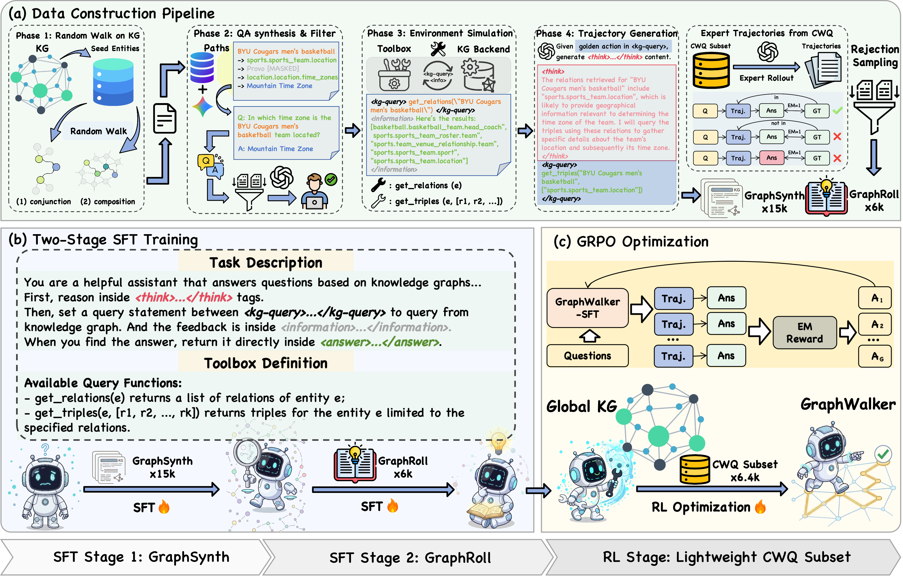
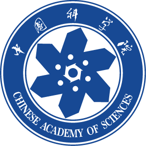
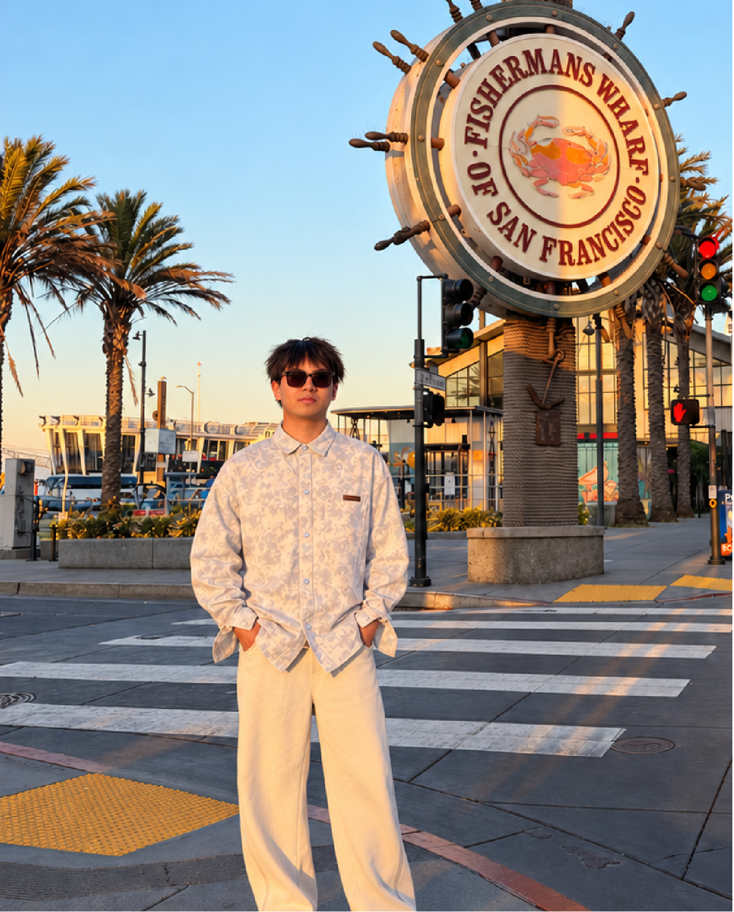
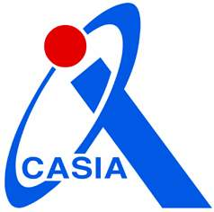
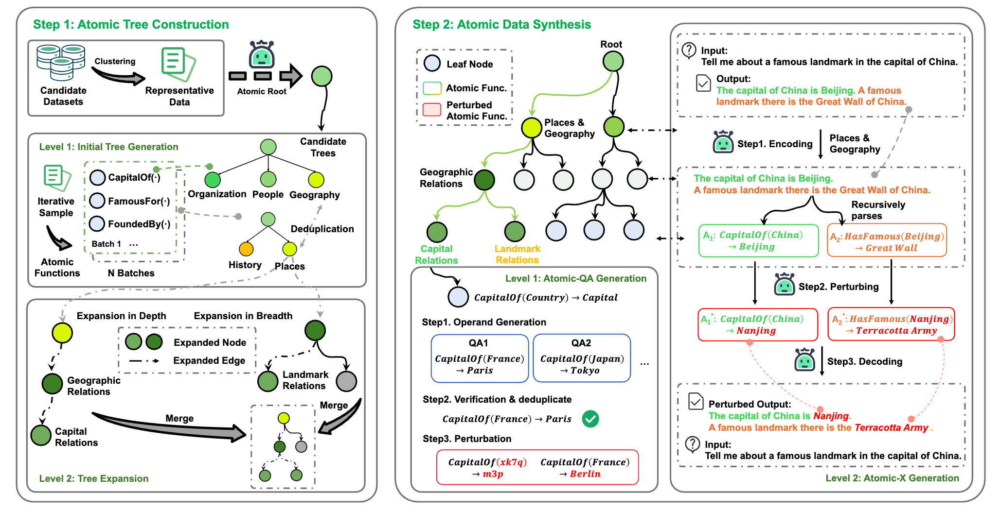
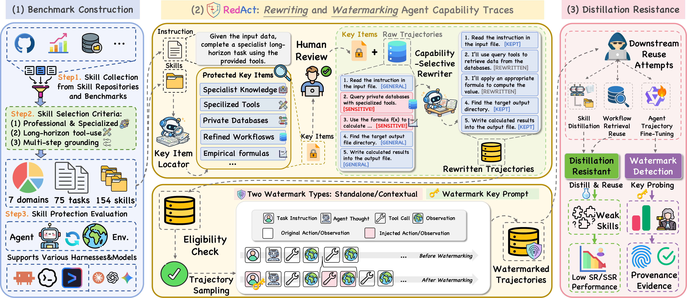
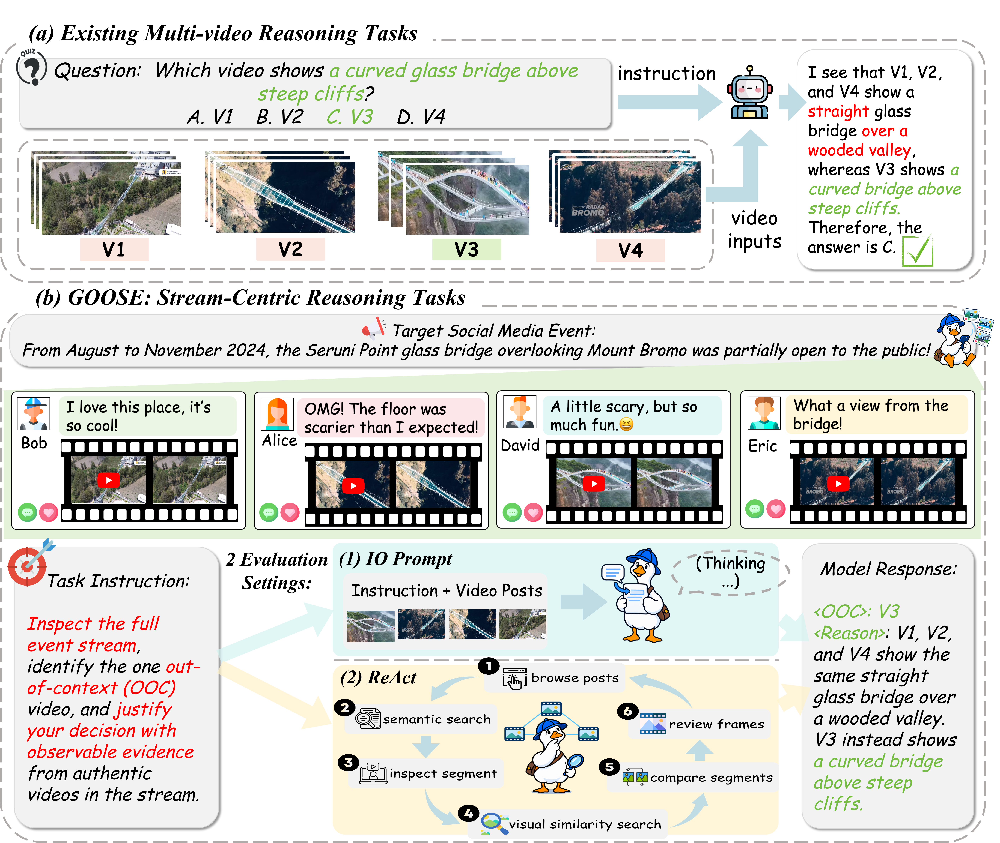
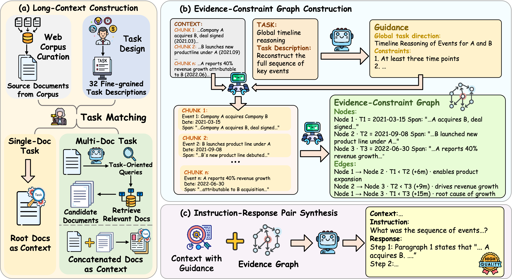
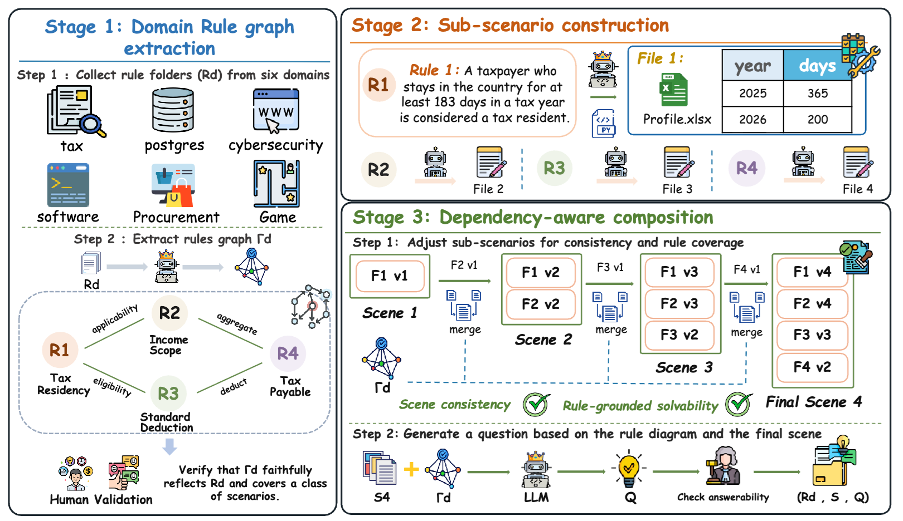

Shuwen Xu
I am currently a final-year undergraduate student at the School of Artificial Intelligence,

University of Chinese Academy of Sciences (UCAS), advised by Prof. Kang Liu and Prof. Jun Zhao. In the Spring 2026 semester, I was a visiting student in the Department of Computer Science and Engineering at The Hong Kong University of Science and Technology (HKUST), working with Prof. Yi R. (May) Fung.My research interests include LLMs/MLLMs, agentic reinforcement learning, efficient model training, and embodied AI.

News
- ATOM was accepted to EMNLP 2026!
- GraphWalker was accepted to COLM 2026!
- I was selected as the leader of an Undergraduate “Qiyan” Research Program, funded by the Beijing Natural Science Foundation.
Education
- B.E. @ University of Chinese Academy of Sciences (UCAS), 2023 – 2027 (Expected) Advisors: Prof. Kang Liu and Prof. Jun Zhao, Beijing.
Experience
-
Research Intern @

Institute of Automation, Chinese Academy of Sciences (CASIA), Jul 2025 – Sep 2026 Work on Synthetic data for LLM post-training, Agentic RL, and Cross-video understanding. - Research Intern @ The Hong Kong University of Science and Technology (HKUST), Mar 2026 – Aug 2026 Work on Agent Skill Protection and Embodied AI.
- Research Intern @ Longcat Foundation Model Team, Meituan, Sep 2026 – Present Work on Environment scaling for cowork agents.
Publications
* indicates equal contribution

Quantifying Tolerance to Errors in Synthetic Data: An Atomic-level Operand vs. Operator Perturbation Study
Jiaxiang Liu*, Chenhao Yuan*, Shuwen Xu*, Boxuan Xing, Xiusheng Huang, Yinhao Xu, Hao Liu, Wenhao Teng, Xiangwen Liao, Pengfei Cao, Jun Zhao, and Kang Liu
Conference on Empirical Methods in Natural Language Processing (EMNLP), 2026
Preprints
* indicates equal contribution

RedAct: Redacting Agent Capability Traces for Procedural Skill Protection
Shuwen Xu, Zhitao He, and Yi R. Fung
Under Review

GOOSE: Which Video Does Not Belong? Multi-Video Reasoning for Out-of-Context Detection in Event Streams
Shaoping Huang*, Shuwen Xu*, Haolin Ren, Zhaoxuan Wang, Jiahao Su, Kejian Zhu, Jiachun Li, Yumin Zhong, Chenhao Yuan, Zhuoran Jin, Shizhu He, Kang Liu, and Jun Zhao
Under Review

LongCrafter: Towards Diverse Long-Context Understanding via Evidence-Graph-Guided Instruction Synthesis
Chenhao Yuan*, Yinhao Xu*, Shuwen Xu, Xizhi Yang, Jiaxiang Liu, Chenxi Zhou, Shaoping Huang, Haolin Ren, Pengfei Cao, Jun Zhao, and Kang Liu
Under Review

RuleTrek: Benchmarking Agentic Rule Reasoning in Complex Scenarios
Chenhao Yuan*, Bohan Yu*, Yinhao Xu*, Chao Yin, Chenxi Zhou, Zhaoxuan Wang, Shuwen Xu, Shaoping Huang, Haolin Ren, Jiaxiang Liu, Yao Xu, Jun Zhao, and Kang Liu
Preprint, 2026
Honors and Awards
- National Scholarship, Ministry of Education, China, 2026.
- First Class Academic Scholarship (Rank: 1/88), University of Chinese Academy of Sciences, 2026.
- Undergraduate “Qiyan” Research Program Leader, funded by the Beijing Natural Science Foundation, 2026.
- Second Prize, Chinese Mathematics Competitions (CMC), 2024.